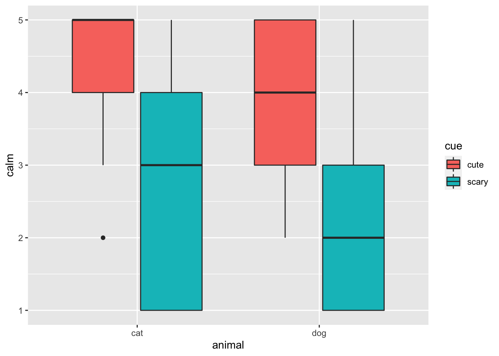
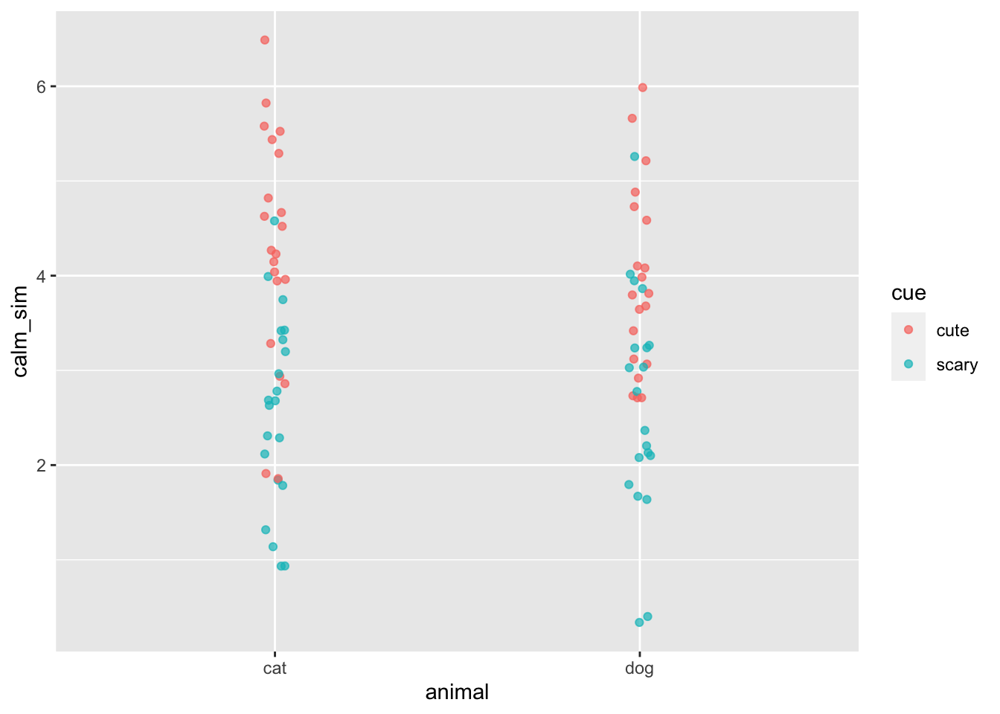
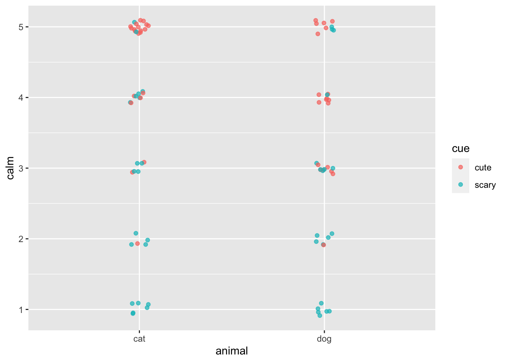
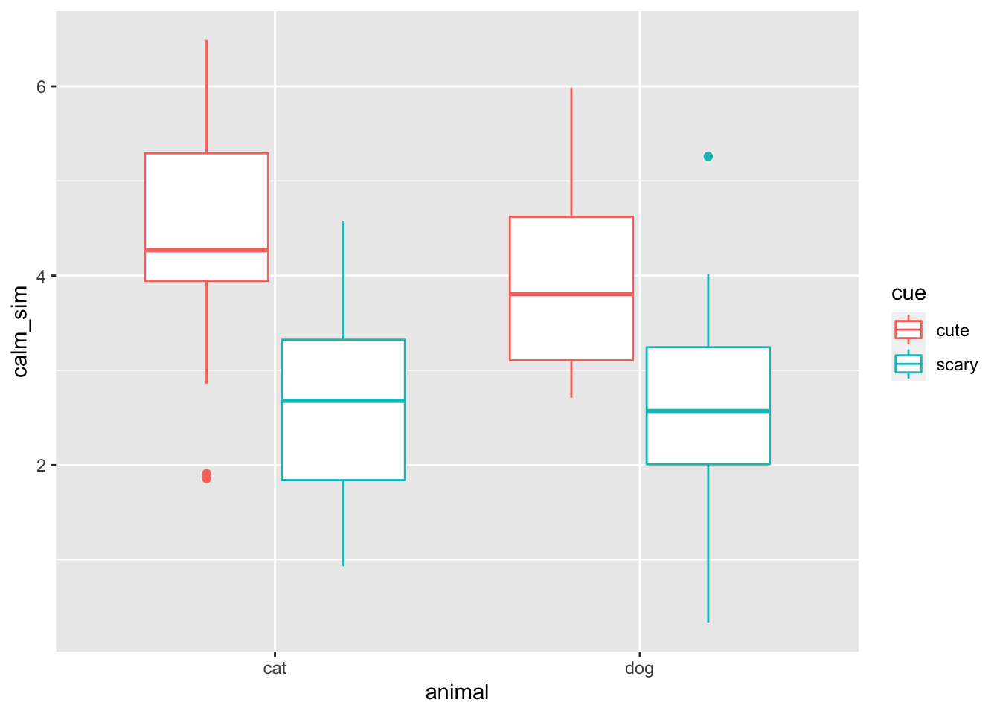
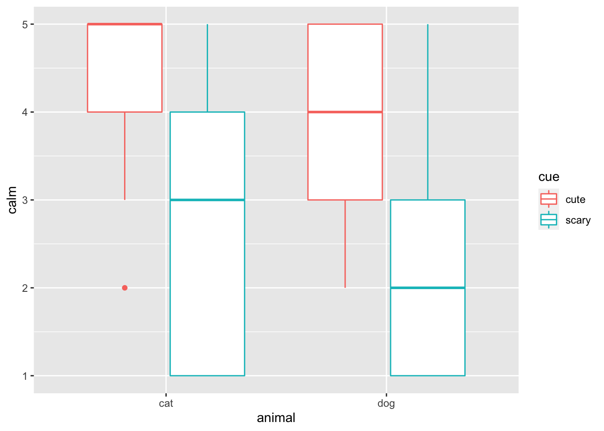

library(tidyverse)
library(mosaic)
library(readr)
animals <- read_csv("https://randilgarcia.github.io/sds290fall21/animals.csv")
animals <- animals %>%
mutate(student = seq.int(1, nrow(animals))) %>%
select(student, order, animal, cute_calm, scary_calm, cute_happy, scary_happy,
cute_nerv, scary_nerv, cute_scared, scary_scared) %>%
mutate_at(vars(cute_calm:scary_scared), as.numeric) %>%
slice(3:length(animals)) %>%
filter(!is.na(cute_calm), !is.na(scary_calm)) %>%
gather(var, value, cute_calm:scary_scared) %>%
separate(var, c("cue", "emotion"), sep = "_") %>%
spread(emotion, value) %>%
unite(cell, cue, animal, remove = FALSE) %>%
select(student, animal, cue, cell, calm) 02 - Informal Analysis
Loading data
Visualizing the data
We can use a side-by-side boxplot.
#looking at variability by condition
ggplot(animals, aes(x = animal, fill = cue, y = calm)) +
geom_boxplot()
Or parallel dot graph
ggplot(animals, aes(x = animal, y = calm, color = cue)) +
geom_jitter(height = 0.00, width = 0.05, alpha = .7)
Assembly Line Metaphor
Assembly Line Instructions
To make the set of assembly instructions, first we calculate the effects of all of our structural factors under the Fisher assumptions. We use the data to calculate all of these effects.
The chunks of code below calculate all of the pieces we’ll need in our assembly line. Each chunk is a station. The ANOVA conditions assumptions are built into the way we are calculating our assembly line instructions and when simulating the data below.
animals_sim <- animals %>%
mutate(benchmark = mean(calm)) #benckmark is the grand average or grand meananimals_sim <- animals_sim %>%
group_by(animal) %>%
mutate(animal_mean = mean(calm),
aminal_effect = animal_mean - benchmark) #for each level of animal factoranimals_sim <- animals_sim %>%
group_by(cue) %>%
mutate(cue_mean = mean(calm),
cue_effect = cue_mean - benchmark) #for each level of cue factoranimals_sim <- animals_sim %>%
group_by(cell) %>%
mutate(cell_mean = mean(calm),
interaction_effect = cell_mean - (animal_mean + cue_mean - benchmark)) #for each cell of interactionanimals_sim <- animals_sim %>%
group_by(student) %>%
mutate(student_mean = mean(calm),
student_effect = student_mean - animal_mean) #for each level of student factor, nuisance factoranimals_sim <- animals_sim %>%
ungroup() %>%
mutate(residuals = calm - (benchmark
+ aminal_effect
+ cue_effect
+ interaction_effect
+ student_effect)) %>% #universal factor
select(-animal_mean, -cue_mean,
-cell_mean, -student_mean) #removing the stuff we don't needLastly, we create a blank calm variable such that we can simulate it next.
animals_sim <- animals_sim %>%
mutate(calm_sim = NA) #initializing simulated variableSimulating Data
Next, we can simulate new calm data using our effect size calculations, with some assumptions in mind.
animals_sim <- animals_sim %>%
mutate(calm_sim = benchmark
+ aminal_effect
+ cue_effect
+ interaction_effect
+ student_effect
+ rnorm(82, 0, 0.79)) #SIMULATED residuals factorComparing Simulated Data to Real Data
Let’s visualize the data
Parallel dot graph
ggplot(animals_sim, aes(x = animal, y = calm_sim, color = cue)) +
geom_jitter(height = 0, width = 0.03, alpha = .7)
ggplot(animals, aes(x = animal, y = calm, color = cue)) +
geom_jitter(height = 0.10, width = 0.05, alpha = .7)
Side-by-side Boxplots
ggplot(animals_sim, aes(x = animal, y = calm_sim, color = cue)) +
geom_boxplot()
ggplot(animals_sim, aes(x = animal, y = calm, color = cue)) +
geom_boxplot()